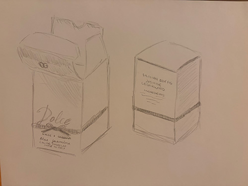

My piece of trash is the box for a Dolce & Gabbana perfume that has for some reason been sitting on my desk for the past four weeks.
It’s a nice box— it’s made out of smooth, periwinkle-blue cardstock that’s a little shiny, but thankfully matte enough for me to take a decent picture without blinding anyone. The “Dolce” logo is a bit big for my tastes, but I like the black ribbon that runs around the box. It’s not a real ribbon, of course, just a printed-on one. It’s slightly raised off the box, though, with a tactile striped pattern that feels nice to run my thumb over.
Underneath all that is the name of the perfume, in pretty cerulean cursive: “blue jasmine.” I’m not sure about the blue, but I can definitely smell the jasmine, even on the box. I know it’s all synthetic chemicals from Italy (or so the box claims), but it reminds me of being eight again, holding my mom’s hand as she guides me past a flower market in India, the air thick with the scent of jasmine flowers. I hated the smell back then, so nauseatingly cloying, but now it feels nostalgic.
I received the perfume as a late Christmas gift from my parents. I had never had a personal perfume before. My mother decided that this was unacceptable for a nineteen year old, and marched us to Macy’s.
The Macy’s makeup and perfume section, more than anything, is a terrifying display of business prowess. Three different associates complimented my earrings before suggesting to me a new perfume at least fifty dollars out of budget. I had entered with the vague notion of getting something vanilla and.or lavender scented, and sniffed about a thousand of those little strips before coming to the conclusion that I was, perhaps, not as much of a vanilla and lavender person as I thought.
I wandered aimlessly for a while, dodging sales associates, before finding blue jasmine. I wish I could say it was a “eureka” or love-at-first-smell moment. In reality, I thought the bottle was pretty, the smell was tolerable, and I was horribly overstimulated. Oh well. At least I smell nice now.
